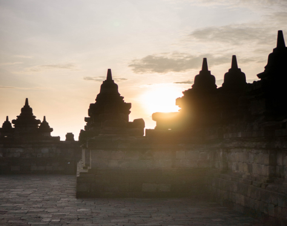
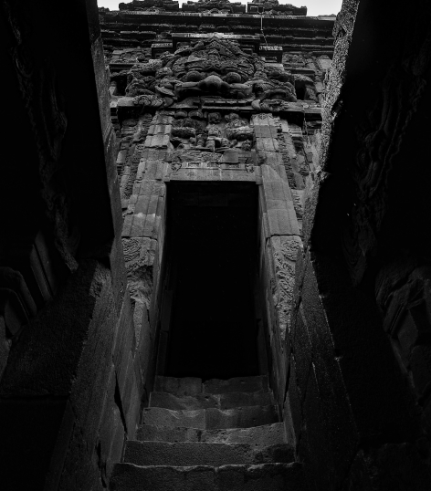
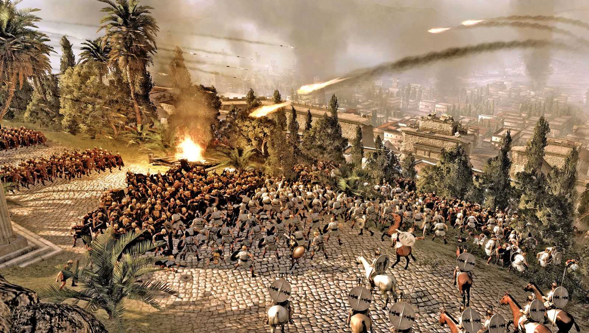
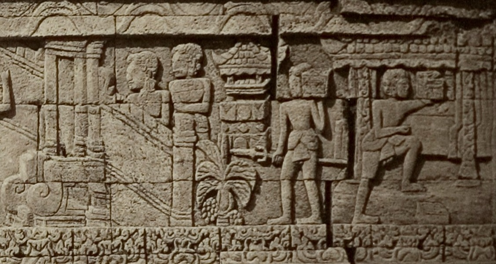
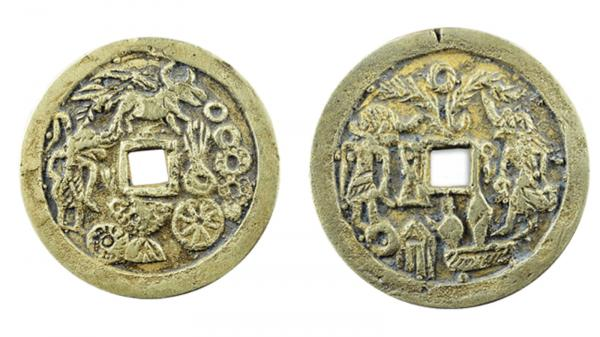

Sejarah
Sebelum berdirinya Majapahit, Singhasari telah menjadi kerajaan
paling kuat di Jawa. Lalu, tanggal pasti yang digunakan sebagai
tanggal kelahiran kerajaan Majapahit adalah hari penobatan Raden
Wijaya sebagai raja, yaitu tanggal 15 bulan Kartika tahun 1215 saka
yang bertepatan dengan tanggal 10 November 1293. Ia dinobatkan
dengan nama resmi Kertarajasa Jayawardhana.
Puncak kejayaan Majapahit

Rajapatni (Gayatri) wafat pada tahun 1350. Setelah ibundanya
wafat, Ratu Tribhuwanatunggadewi menyerahkan tahta Majapahit
kepada putranya, Hayam Wuruk. Ketika naik tahta Hayam Wuruk baru
berusia 16 tahun. Setelah naik tahta Hayam Wuruk bergelar Sri
Rajasanegara. Pada masa pemerintahan Hayam Wuruk, Majapahit
mengalami zaman keemasan. Hayam Wuruk didampingi oleh Mahapatih
Gajah Mada. Hayam Wuruk menjadi raja Majapahit yang paling
terkenal. Gajah Mada meneruskan cita-citanya. Satu persatu
kerajaan di nusantara dapat ditaklukkan dibawah Majapahit. Wilayah
kerajaannya meliputi hampir seluruh wilayah nusantara sekarang,
ditambah Tumasik (Singapura) dan Semenanjung Melayu.
Kemunduran

Sesudah mencapai puncaknya pada abad ke-14, kekuasaan Majapahit
berangsur-angsur melemah. Setelah wafatnya Hayam Wuruk pada tahun
1389, Majapahit memasuki masa kemunduran akibat konflik perebutan
takhta. Kematian Hayam Wuruk dan adanya konflik perebutan takhta
menyebabkan daerah-daerah Majapahit di bagian utara Sumatra dan
Semenanjung Malaya memerdekakan diri, di mana semenanjung Malaya
menjadi daerah kekuasaan Kerajaan Ayutthaya hingga nantinya muncul
Kesultanan Melaka yang didukung oleh Dinasti Ming.
Keruntuhan

Kekalahan Bhre Kertabhumi dari Ranawijaya pada tahun 1474, memicu
perang antara Kerajaan Majapahit dengan Demak, karena Demak sudah
menjadi penguasa pesisir Jawa yang dominan, dan mereka mengambil
alih daerah Jambi dan Palembang dari kekuasaan
Majapahit yang telah terpukul dan berfokus di
pedalaman pulau Jawa. Konon, waktu berakhirnya Kemaharajaan
Majapahit berkisar pada kurun waktu tahun 1478 (tahun 1400
saka, berakhirnya abad dianggap sebagai waktu lazim
pergantian dinasti dan berakhirnya suatu pemerintahan) hingga
tahun 1527. Tetapi dalam tradisi Jawa yang sebenarnya
digambarkan oleh candrasengkala atau kronogram tersebut adalah
wafatnya Bhre Kertabhumi pada tahun 1478.
Kebudayaan
Nagarakretagama menyebutkan budaya keraton yang adiluhung dan anggun, dengan cita rasa seni dan sastra yang halus, serta sistem ritual keagamaan yang rumit. Peristiwa utama dalam kalender tata negara digelar tiap hari pertama bulan Caitra (Maret-April) ketika semua utusan dari semua wilayah taklukan Majapahit datang ke istana untuk membayar upeti atau pajak. Kawasan Majapahit secara sederhana terbagi dalam tiga jenis: keraton termasuk kawasan ibu kota dan sekitarnya; wilayah-wilayah di Jawa Timur dan Bali yang secara langsung dikepalai oleh pejabat yang ditunjuk langsung oleh raja; serta wilayah-wilayah taklukan di kepulauan Nusantara yang menikmati otonomi luas.

Ekonomi
Majapahit merupakan negara agraris dan sekaligus negara perdagangan. Pajak dan denda dibayarkan dalam uang tunai. Ekonomi Jawa telah sebagian mengenal mata uang sejak abad ke-8 pada masa kerajaan Medang yang menggunakan butiran dan keping uang emas dan perak. Sekitar tahun 1300, pada masa pemerintahan raja pertama Majapahit, sebuah perubahan moneter penting terjadi: keping uang dalam negeri diganti dengan uang "kepeng" yaitu keping uang tembaga impor dari China. Pada November 2008 sekitar 10.388 keping koin China kuno seberat sekitar 40 kilogram digali dari halaman belakang seorang penduduk di Sidoarjo. Badan Pelestarian Peninggalan Purbakala (BP3) Jawa Timur memastikan bahwa koin tersebut berasal dari era Majapahit. Alasan penggunaan uang logam atau koin asing ini tidak disebutkan dalam catatan sejarah, akan tetapi kebanyakan ahli menduga bahwa dengan semakin kompleksnya ekonomi Jawa, maka diperlukan uang pecahan kecil atau uang receh dalam sistem mata uang Majapahit agar dapat digunakan dalam aktivitas ekonomi sehari-hari di pasar Majapahit. Peran ini tidak cocok dan tidak dapat dipenuhi oleh uang emas dan perak yang mahal.

Struktur Pemerintahan
Majapahit memiliki struktur pemerintahan dan susunan birokrasi yang teratur pada masa pemerintahan Hayam Wuruk, dan tampaknya struktur dan birokrasi tersebut tidak banyak berubah selama perkembangan sejarahnya. Raja dianggap sebagai penjelmaan dewa di dunia dan ia memegang otoritas politik tertinggi.
Aparat birokrasi
Raja dibantu oleh sejumlah pejabat birokrasi dalam melaksanakan pemerintahan, dengan para putra dan kerabat dekat raja memiliki kedudukan tinggi. Perintah raja biasanya diturunkan kepada pejabat-pejabat di bawahnya, antara lain yaitu:
- Rakryan Mahamantri Katrini, biasanya dijabat putra-putra raja
- Rakryan Mantri ri Pakira-kiran, dewan menteri yang melaksanakan pemerintahan
- Dharmmadhyaksa, para pejabat hukum keagamaan
- Dharmma-upapatti, para pejabat keagamaan
Pembagian wilayah
Dalam pembentukannya, kerajaan Majapahit merupakan kelanjutan Singhasari, terdiri atas beberapa kawasan tertentu di bagian timur dan bagian tengah Jawa. Daerah ini diperintah oleh uparaja yang disebut Paduka Bhattara yang bergelar Bhre atau "Bhatara i". Gelar ini adalah gelar tertinggi bangsawan kerajaan. Biasanya posisi ini hanyalah untuk kerabat dekat raja. Tugas mereka adalah untuk mengelola kerajaan mereka, memungut pajak, dan mengirimkan upeti ke pusat, dan mengelola pertahanan di perbatasan daerah yang mereka pimpin.